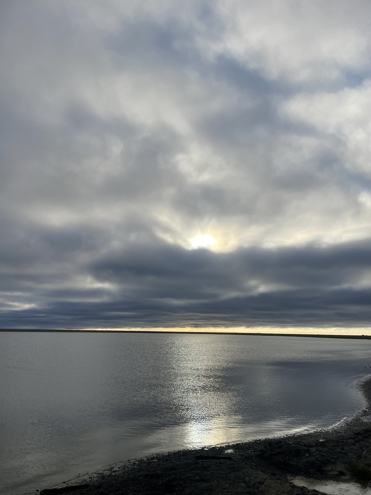
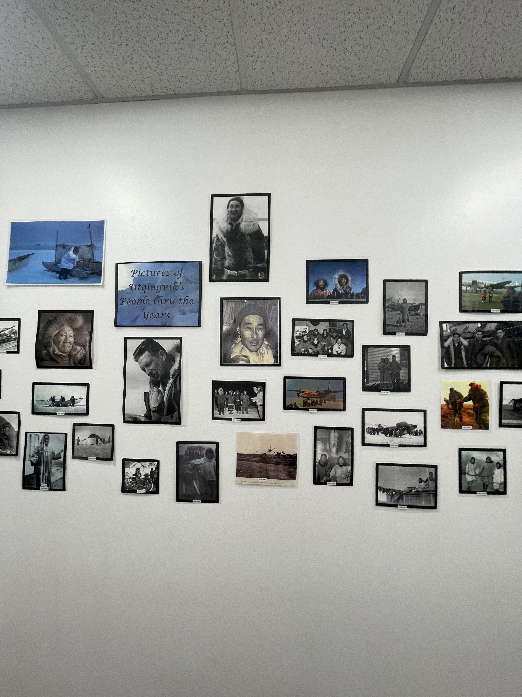
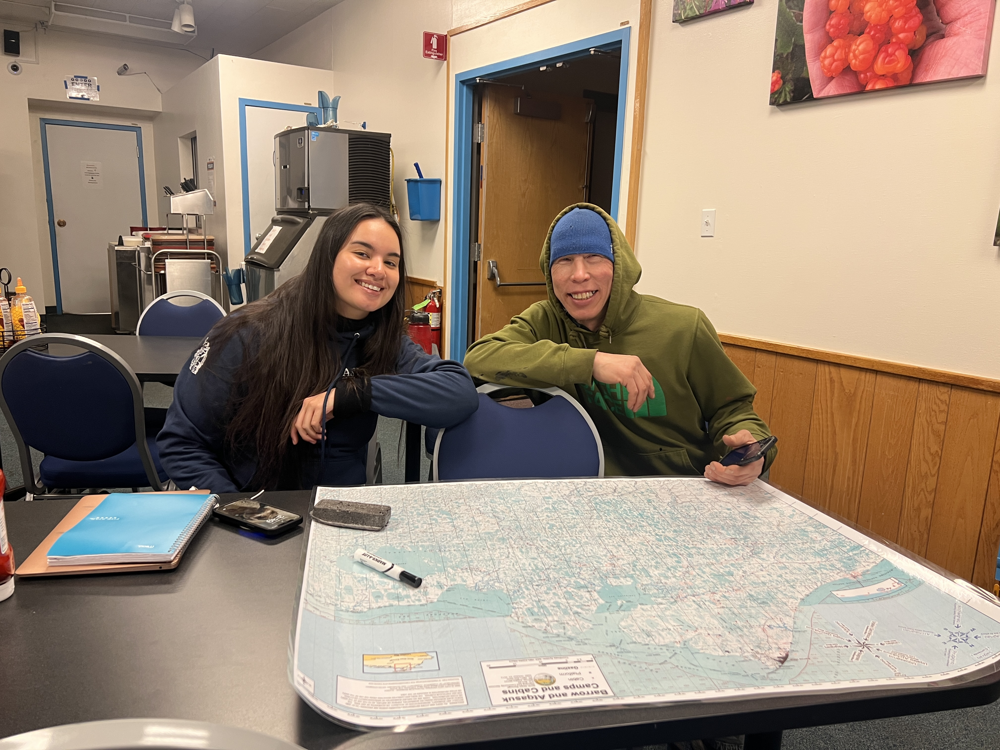

Utqiaġvik
Trail Mobility & Access in the Arctic
University of Leeds · Funded Research Project

Utqiaġvik is my hometown on Alaska's Arctic coast — the northernmost city in the United States. Through a research project funded by the University of Leeds, I am investigating trail mobility and access in the Arctic, working to understand how environmental change is reshaping on-the-ground travel for people who depend on inland trails for hunting, gathering, and moving across the landscape.
Funding: University of Leeds
Location: Utqiaġvik (Barrow), Alaska
Scoping Visit: August 2025 — refining research questions, community introductions
Field Visit: January 2026 — 18 semi-structured interviews
Methods: Semi-structured interviews, community-engaged research design
August 2025 — Scoping Visit
In August 2025, I traveled to Utqiaġvik for a scoping visit to lay the groundwork for the project. The goal was to refine my research questions, introduce the project to the community, and begin building the relationships that are essential for community-engaged research. Being from Utqiaġvik, this work is deeply personal — it's an opportunity to apply my research skills to questions that matter to my own community.

January 2026 — Interviews
I returned to Utqiaġvik in January 2026 for the core fieldwork phase. Over several weeks, I conducted 18 semi-structured interviews with community members to understand the constraints to inland travel. These conversations covered topics like trail conditions, changing freeze-up and breakup timing, snow quality, river crossings, and how people adapt their travel when familiar routes become unreliable.
The interviews painted a rich picture of how environmental change is experienced on the ground — not just as a scientific observation, but as a daily reality that affects how people access hunting grounds, cabin sites, and places of cultural significance across the tundra and along the coast.

Looking Ahead
This research is still in its early stages. The interview data will be analyzed to identify common themes around mobility constraints and adaptive strategies, contributing to a broader understanding of how Arctic communities navigate a rapidly changing environment. The findings will inform ongoing conversations about infrastructure, trail management, and community resilience in the Arctic.